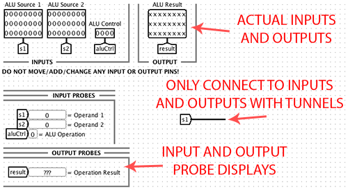
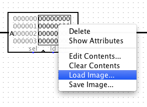

Updates
- The original RUN.circ was updated on Thursday April 24 at 12:15 PM. If you copied this file before then, please retrieve it again (the old version had a pointless MUX that broke the circuit).
Overview
In this project, you will be implementing a 2-stage pipelined processor for the Ida assembly language (a language designed specifically for this project!). It is absolutely necessary to thoroughly read through the Ida Manual to be able to complete this project, as there are substantial differences (both simplifications and complications) from MIPS.
Before you begin, some points to consider:
- It is absolutely critical not to move the input or output pins in any of the supplied circuit files.
- You may use any built in components supplied in Logisim, EXCEPT for the built in clock pin (instead use the clock signal given as an input to the circuit).
- Make sure you are familiar with the subtleties explained in the Ida Manual. For example: When does sign extension happen? What do comparison queries return before a comparison has occurred?
Getting Started
For this project, you should work in groups of two (however, you may work solo). You are not allowed to show or share your project files with any other students, friends, and such. This includes files you write for testing.
As usual, note that looking at solutions from previous semesters is also strictly prohibited. We have various tools at our disposal to detect plagiarism and they are very good at what they do.
Files
Before you begin, copy the start kit to your project 4 directory:
cp -r ~cs61c/proj/04/* proj04
The following files are given:
- RUN.circ - contains instruction memory and runs your project; DO NOT MODIFY
- REG.circ - contains all general purpose registers
- CPU.circ - contains most of the processor, excluding instruction memory.
- ALU.circ - performs arithmetic operations
- QUESTIONS - contains some questions for you to answer
- hex/ - contains testing tools
Pipelining
You will be implementing a 2-stage pipeline, specifically including the following stages:
- Instruction Fetch - fetch an instruction from instruction memory
- Decode - everything else (decode and execute the instruction, then write back the results)
Note that data hazards are not present in this design, since every data access from any source occurs only in one pipeline stage. However, control hazards must still be accounted for. Ida does not expose branch delay slots to software. In other words, the instruction immediately after a jump is not necessarily executed if the jump actually occurs. By the time you have figured out that a jump is in the execute stage, you have already accessed the instruction memory and possibly pulled out the wrong instruction. Thus you will need to "kill" the instruction being fetched if the instruction currently being executed is a taken jump (which is to say that jumps that are not taken should not cause a kill).
Instruction kills for this project MUST be accomplished by MUXing a nop into the instruction stream and sending the nop into the execute stage (instead of using the fetched instruction). Notice that every Ida instruction contains numerous possible nops (every instruction can be turned into a nop using the ?NO comparison query). However, you MUST use 0x00000000 as a nop, for grading purposes.
Because all of the control and execution is handled in the Execute stage, your processor should be more or less indistinguishable from a single-cycle implementation, barring the one-cycle startup latency and the jump delays. However, we will be enforcing the two-pipeline design. If you are unsure about pipelining, it is perfectly fine (and even recommended) to first implement a single-cycle processor. This will allow you to first verify that your instruction decoding, control signals, arithmetic operations, and memory accesses are all working properly. From a single-cycle processor, you can then split off the instruction fetch stage with a few additions and a few logical tweaks.
You might also notice a bootstrapping problem here: during the first cycle, the instruction register sitting between the pipeline stages won't contain an instruction loaded from memory. How do we deal with this? It happens that Logisim automatically sets registers to zero on reset. The instruction register will then contain a nop. We will allow you to depend on this behavior of Logisim (which is required as specified in the Ida Manual).
Starting Circuit Files
Layout
The general layout of the skeleton files is demonstrated with the ALU skeleton file shown here.

In this example, the top row contains the actual input and output pins. These must not be moved or changed under any circumstances! Connect to these pins using tunnels. Each file also has a helpful group of display probes, which merely display the inputs and outputs in a more readable format. These probes can be ignored, moved, or changed as desired.
REG.circ
You will design a register file to manage the sixteen 24-bit registers in Ida. After being told to write data to a particular register, you will be able to retrieve that data by asking for the value of that register on subsequent clock cycles.
Note:
- There is a third register value output, unlike in MIPS. You will have to figure out which instructions require reading the values of three registers.
- Be sure to review the register table in the Ida Manual for any special cases.
| Input | Description |
| reg1Read | the first register to read from |
| reg2Read | the second register to read from |
| reg3Write | the register to write to, which is also the third register to read from |
| writeVal | the value to write to the specified register |
| write? | enables writing to the register |
| clk | the clock pulse |
| Output | Description |
| reg1Val | the first read register value |
| reg2Val | the second read register value |
| reg3Val | the third read register value |
| R00 - R15 | all the register values; used for debugging and grading only |
WARNING: BE CERTAIN NOT TO CHANGE OR MOVE THE INPUT OR OUTPUT PINS OF THIS CIRCUIT!
ALU.circ
You will also design an ALU that your processor will use to do math. You will tell your ALU what operation to perform, and it will drive its output with the result of that operation.
Note:
- You are allowed to use ANY of Logisim's built-in arithmetic blocks.
- The two comparison operations are implementation-dependent (you can output any value that works for you), and while they may return fewer than 24 bits, the ALU will still output a 24 bit quantity as always. Review the Ida Manual for details.
- You cannot store any comparison checking in the ALU, because there is no clock input. Including a clock pin in the ALU is not allowed.
- Unlike the ALUs we've studied in the past, this ALU does not have an ALU control input. Instead it takes in the instruction's operation number. The reason for this is that there are 12 unique arithmetic operations in Ida, requiring 4 bits to be passed along in an ALU control signal. Since the operation field is also 4 bits, it is simpler to pass this into the ALU instead.
| Input | Description |
| s1 | the first ALU operand |
| s2 | the second ALU operand |
| operation | the operation number that identifies which instruction is being
executed (for operations that do not use the ALU, output 0)
|
| Output | Description |
| result | the result of the selected operation |
WARNING: BE CERTAIN NOT TO CHANGE OR MOVE THE INPUT OR OUTPUT PINS OF THIS CIRCUIT!
CPU.circ
The CPU contains most of the processor, excluding instruction memory. The reason for this involves testing concerns. There are several things to note here:
Note:
- You will have to store the comparison register and the program counter register in this file, and implement it in whichever way you choose.
- Most of the control signals you might use are the same as the MIPS control signals we've studied. However, the choosable register/immediate field described in the Ida Manual will complicate several of these signals.
- Hint: design your control logic carefully. What might happen to your control signals when the comparison query is false?
- You will need to implement data memory here.
| Input | Description |
| inst | the next encoded instruction to execute |
| clk | the clock pulse |
| Output | Description |
| nextPC | the next program counter to use |
| memData | the data that is being written into memory if memory writing is active, or garbage otherwise; used for debugging and grading only |
| memAddr | the address that would be written to in memory if memory writing is active, or garbage otherwise; used for debugging and grading only |
| memWrite? | whether writing to memory is enabled; used for debugging and grading only |
| R00 - R15 | all the register values; used for debugging and grading only |
WARNING: BE CERTAIN NOT TO CHANGE OR MOVE THE INPUT OR OUTPUT PINS OF THIS CIRCUIT!
RUN.circ
This test harness contains the remainder of the CPU logic, and is used to run the processor. Since you will not submit this file, any changes you make will not be graded.
Questions
The provided QUESTIONS file contains a few short questions for you to answer. They are also listed here for reference. Please answer them within the QUESTIONS file.
- Briefly explain how you implemented comparison queries and how they affected your control block's signals (in a few sentences).
- Please list your control block's control signals, and briefly explain what each one does (in a sentence or less each).
- What features (if any) of this assembly language do you like?
- What features (if any) of this assembly language do you not like?
Logisim Notes
It is strongly recommended that you download Logisim and to run on your local machine while developing your processor to avoid overwhelming the instructional machines. Though Logisim is relatively stable, it is still recommended that you save often, and also make backup copies of your .circ files early and often. The official version of Logisim we will be using for evaluation is v2.7.1.
Some Helpful Hints:
- If you are having trouble with Logisim (especially involving blue wires), be sure to restart Logisim and reload your circuit! Don't waste your time chasing a bug that is not your fault. However, if restarting doesn't solve the problem, it is more likely that the bug is a flaw in your project.
- Do NOT gate the clock! This is very bad design practice when making real circuits, so we will discourage you from doing this by heavily penalizing your project if you gate your clock.
- BE CAREFUL with copying and pasting from different Logisim windows. Logisim has been known to have trouble with this in the past.
- Changing attributes before placing a component changes the default settings for that component. So if you are about to place many 16-bit pins, this might be desirable. If you only want to change that particular component, place it first before changing the attributes.
- When you change the inputs and outputs of a sub-circuit that you have already placed in an outer circuit, Logisim will automatically add and remove the changed ports when you return to outer circuit, and this sometimes shifts the block itself. If there were wires attached, Logisim will do its automatic moving of these as well, which can be extremely dumb in some cases. Before you change the inputs and outputs of a block, it can sometimes be easier to first disconnect all wires from it.
- Error signals (red wires) are obviously bad, but they tend to appear in
complicated wiring jobs such as the one you will be implementing here. It's good to be
aware of the common causes while debugging:

Testing
Once you've implemented your processor, you can test its correctness by writing programs to run on it! This simple program has been provided for you as a basic sanity check: halt.ida. This program loads the values 1-15 into registers 1-15, and then attempts to "halt" by performing an infinite loop. If it fails to halt (for example, due to an error in your jump computation), it will then set all registers to 0.
See the Ida Manual to review how the assembler and emulator works.
After the hex files have been assembled (and hopefully run through the emulator), they can be loaded into a logisim RAM unit. Loading a hex file should be done before running a simulation normally.

Please note that you are EXPECTED to fully test your circuit as this is the ONLY way for you to know if you completed everything correctly. Also note that in the event the emulator differs from the behavior defined in the Ida Manual, you should assume the manual is correct.
Submission
Make sure to fill out the questions in the QUESTIONS file before submitting.
You must submit only the following files:
- REG.circ
- ALU.circ
- CPU.circ
- QUESTIONS
Again, this means that none of your circuits may use other external circuits. Submit in the usual way:
submit proj4
This project is due in its entirety on Sunday, May 4th, 2014 at 23:59:59.
Grading
This project will be graded in large part by an autograder. Readers will also glance at your circuits. If some of your tests fail the readers will look to see if there is a simple wiring problem. If they can find one they will give you the new score from the autograder minus a deduction based on the severity of the wiring problem. For this reason and as neatness is a small part of your grade please try to make your circuits neat and readable.